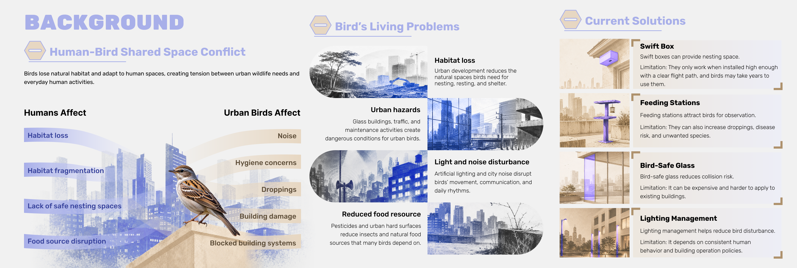
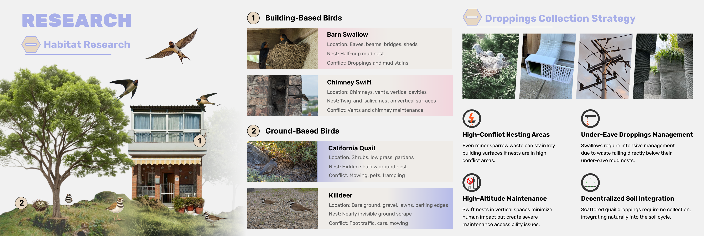

Insight 01
Habitat needs are spatially layered.
Birds occupy different layers of the city, including ground, trees, building edges, eaves, chimneys, and vertical surfaces.
Portfolio Case Study
An ongoing design research project exploring how urban spaces can support coexistence between humans and birds by reducing habitat conflict, nesting disruption, droppings issues, and maintenance challenges.
This work-in-progress case study translates urban wildlife research into a system-level design direction for human-bird shared spaces.
Design Research / Environmental Research / System Design / Urban Interaction Design
Visual Research / Habitat Mapping / Species Research / System Analysis
Human-Bird Shared Space / Urban Wildlife / Nesting Habitat / Droppings Management / Coexistence Strategy
As cities expand, birds lose natural habitat and adapt to human-built spaces such as building edges, vents, roofs, balconies, eaves, chimneys, grass patches, and parking areas.
This creates shared space conflict between everyday human activities and urban wildlife needs. Humans are affected by habitat fragmentation, lack of safe nesting spaces, droppings, hygiene concerns, noise, and building maintenance issues.
Birds are affected by habitat loss, urban hazards, reduced food resources, and light and noise disturbance. The project investigates how droppings management and habitat guidance can reduce conflict without removing birds from the city.

Different birds occupy different urban layers, which means conflict appears in different physical locations.
Different birds need different habitat forms, so one universal nesting solution cannot address every human-bird conflict.

The research points toward guided coexistence rather than simple attraction or removal.
Birds occupy different layers of the city, including ground, trees, building edges, eaves, chimneys, and vertical surfaces.
Droppings, blocked systems, maintenance access, and hygiene concerns usually appear when birds nest in high-conflict zones.
A successful solution should not simply attract birds everywhere. It should guide nesting and droppings into safer, more manageable areas.
Building-based birds and ground-based birds require different structures, materials, heights, and levels of protection.
The project is still in progress and currently focuses on translating research findings into a system-level coexistence strategy.
The next stage remains exploratory and will test how research can become modular urban infrastructure.
The next design stage will explore a modular urban habitat system that gives birds safer nesting and resting options while helping humans manage droppings, maintenance, and building conflicts.